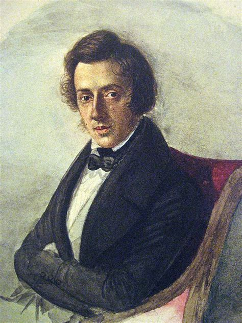

Fryderyk Chopin
[Fryderyk Šopén]
Život a díla
- 19. století - romantismus
- polský hudební skladatel
- klavírní virtuos
- otec byl Francouz, matka Polka
- učil se hrát na klavír a v 7 letech se pokoušel o své první skladby
- 1830 - odjel do Paříže
- zemřel na tuberkulózu
- díla - skladby pro klavír: Mazurky, Polonézy + Etudy [etýdy] (cvičné skladby)
Mazurka
- oblíbený tanec Fryderyka Chopina
- je to v taktu
- vznikl v Polsku